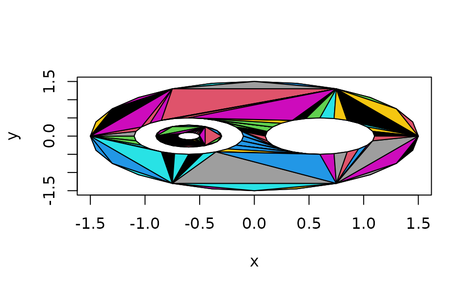

triangulate.RdThis algorithm decomposes a general polygon into simple polygons and uses the “ear-clipping” algorithm to triangulate it. Polygons with holes are supported.
triangulate(x, y = NULL, z = NULL, random = TRUE, plot = FALSE, partial = NA)
| x, y, z | Coordinates of a two-dimensional polygon in a format supported by |
|---|---|
| random | Whether to use a random or deterministic triangulation. |
| plot | Whether to plot the triangulation; mainly for debugging purposes. |
| partial | If the triangulation fails, should partial results be returned? |
Normally triangulate looks only at the x and y
coordinates. However, if one of those is constant, it is replaced
with the z coordinate if present.
The algorithm works as follows. First, it breaks the polygon into
pieces separated by NA values in x or y.
Each of these pieces should be a simple, non-self-intersecting
polygon, separate from the other pieces.
(Though some minor exceptions to this rule may work, none
are guaranteed). The nesting of these pieces is determined.
The “outer” polygon(s) are then merged with the polygons that they immediately contain, and each of these pieces is triangulated using the ear-clipping algorithm.
Finally, all the triangulated pieces are put together into one result.
A three-by-n array giving the indices of the vertices of each triangle. (No vertices are added; only the original vertices are used in the triangulation.)
The array has an integer vector attribute "nextvert"
with one entry per vertex, giving the index of the next
vertex to proceed counter-clockwise around outer
polygon boundaries, clockwise around inner boundaries.
See the Wikipedia article “polygon triangulation” for a description of the ear-clipping algorithm.
Duncan Murdoch
Not all inputs will succeed, even when a triangulation is
possible. Generally using random = TRUE will find
a successful triangulation if one exists, but it may
occasionally take more than one try.
theta <- seq(0, 2*pi, len = 25)[-25] theta <- c(theta, NA, theta, NA, theta, NA, theta, NA, theta) r <- c(rep(1.5, 24), NA, rep(0.5, 24), NA, rep(0.5, 24), NA, rep(0.3, 24), NA, rep(0.1, 24)) dx <- c(rep(0, 24), NA, rep(0.6, 24), NA, rep(-0.6, 24), NA, rep(-0.6, 24), NA, rep(-0.6, 24)) x <- r*cos(theta) + dx y <- r*sin(theta) plot(x, y, type = "n")triangulate(x, y, plot = TRUE)#> [,1] [,2] [,3] [,4] [,5] [,6] [,7] [,8] [,9] [,10] [,11] [,12] [,13] [,14] #> [1,] 44 69 16 16 69 44 43 43 43 42 42 24 24 68 #> [2,] 70 16 45 24 68 43 71 72 42 73 74 46 47 67 #> [3,] 69 44 44 45 16 70 70 71 72 72 73 45 46 16 #> [,15] [,16] [,17] [,18] [,19] [,20] [,21] [,22] [,23] [,24] [,25] [,26] #> [1,] 24 67 42 41 40 39 38 38 66 37 24 37 #> [2,] 48 66 41 40 39 38 51 37 65 52 49 36 #> [3,] 47 16 74 74 74 74 74 51 16 51 48 52 #> [,27] [,28] [,29] [,30] [,31] [,32] [,33] [,34] [,35] [,36] [,37] [,38] #> [1,] 36 24 35 65 24 24 64 34 63 63 62 24 #> [2,] 35 26 34 64 27 28 63 53 12 62 61 3 #> [3,] 52 49 52 16 26 27 16 52 16 12 12 28 #> [,39] [,40] [,41] [,42] [,43] [,44] [,45] [,46] [,47] [,48] [,49] [,50] #> [1,] 34 61 60 3 3 33 59 33 33 16 58 3 #> [2,] 33 60 59 29 7 54 58 55 32 18 10 5 #> [3,] 53 12 12 28 29 53 12 54 55 24 12 7 #> [,51] [,52] [,53] [,54] [,55] [,56] [,57] [,58] [,59] [,60] [,61] [,62] #> [1,] 58 57 18 18 32 7 10 16 7 12 32 20 #> [2,] 57 32 20 19 56 30 11 17 31 13 9 22 #> [3,] 10 10 24 20 55 29 12 18 30 16 10 24 #> [,63] [,64] [,65] [,66] [,67] [,68] [,69] [,70] [,71] [,72] [,73] [,74] #> [1,] 13 32 5 3 7 24 1 22 57 8 13 20 #> [2,] 15 31 6 4 8 1 2 23 56 9 14 21 #> [3,] 16 9 7 5 31 3 3 24 32 31 15 22 #> [,75] [,76] [,77] [,78] [,79] [,80] [,81] [,82] [,83] [,84] [,85] [,86] #> [1,] 118 91 117 116 91 115 91 91 114 97 97 113 #> [2,] 117 119 116 115 120 114 121 97 113 122 123 112 #> [3,] 91 118 91 91 119 91 120 121 91 121 122 91 #> [,87] [,88] [,89] [,90] [,91] [,92] [,93] [,94] [,95] [,96] [,97] [,98] #> [1,] 97 112 112 111 110 109 108 107 97 97 106 105 #> [2,] 124 85 111 110 109 108 107 106 101 102 105 80 #> [3,] 123 91 85 85 85 85 85 85 124 101 85 85 #> [,99] [,100] [,101] [,102] [,103] [,104] [,105] [,106] [,107] [,108] #> [1,] 97 97 78 85 98 99 105 104 91 80 #> [2,] 78 98 103 87 99 77 104 103 95 83 #> [3,] 102 78 102 91 78 78 80 80 97 85 #> [,109] [,110] [,111] [,112] [,113] [,114] [,115] [,116] [,117] [,118] #> [1,] 80 91 87 99 87 78 92 80 83 85 #> [2,] 82 92 89 76 88 80 93 81 84 86 #> [3,] 83 95 91 77 89 103 95 82 85 87 #> [,119] [,120] [,121] [,122] #> [1,] 89 95 78 93 #> [2,] 90 96 79 94 #> [3,] 91 97 80 95 #> attr(,"nextvert") #> [1] 2 3 4 5 6 7 8 9 10 11 12 13 14 15 16 17 18 19 #> [19] 20 21 22 23 24 1 NA 49 26 27 28 29 30 31 32 33 34 35 #> [37] 36 37 38 39 40 41 42 43 44 45 46 47 48 NA 74 51 52 53 #> [55] 54 55 56 57 58 59 60 61 62 63 64 65 66 67 68 69 70 71 #> [73] 72 73 NA 77 78 79 80 81 82 83 84 85 86 87 88 89 90 91 #> [91] 92 93 94 95 96 97 98 99 76 NA 124 101 102 103 104 105 106 107 #> [109] 108 109 110 111 112 113 114 115 116 117 118 119 120 121 122 123#> Warning: no non-missing arguments to max; returning -Inf#> Warning: no non-missing arguments to max; returning -Inf#> Error in processOutside(i): Cannot triangulate polygon